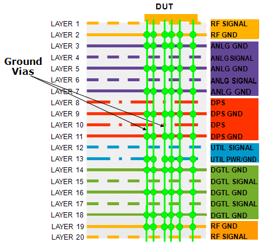

Connecting the different grounds on the DUT board
The various signal types (RF, analog, DPS, utility, digital) need to be separated by their dedicated ground layers (RFGND, AGND, DPSGND, UGND and DGND). To avoid ground loops, these ground layers are separated throughout the complete signal routing and only connected together at the DUT, typically right underneath or near to the device.
The vertical grounding connections are done with multiple grounding vias. The overall behavior of these connections is typically inductive. DUT boards for the majority of today's modern devices use this grounding scheme, also called the SOC-type grounding concept. For information on this and on avoiding ground loops refer to Grounding.

The traditional concept of grounding is applicable at low frequencies only. At higher frequencies the more generalized concept of return path applies instead.
Functional changes
- Introduced in SmarTest 7.2.0